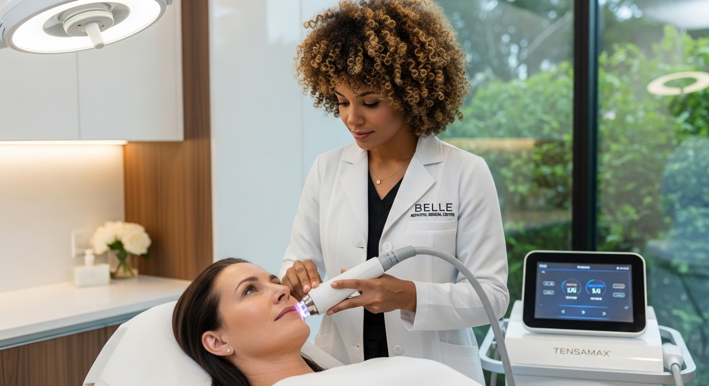
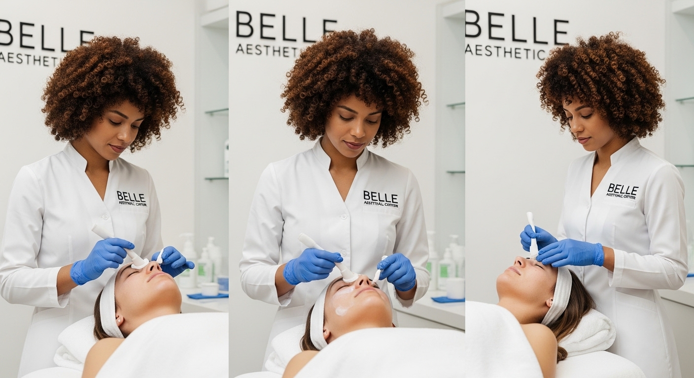
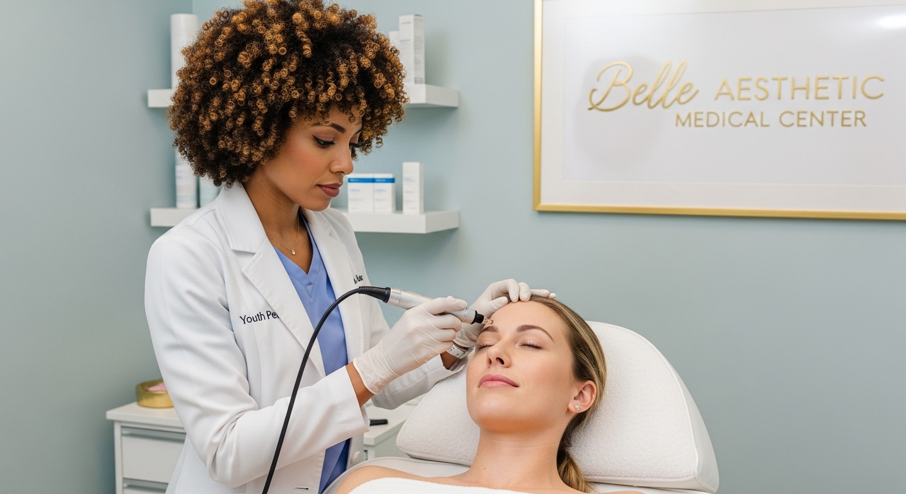
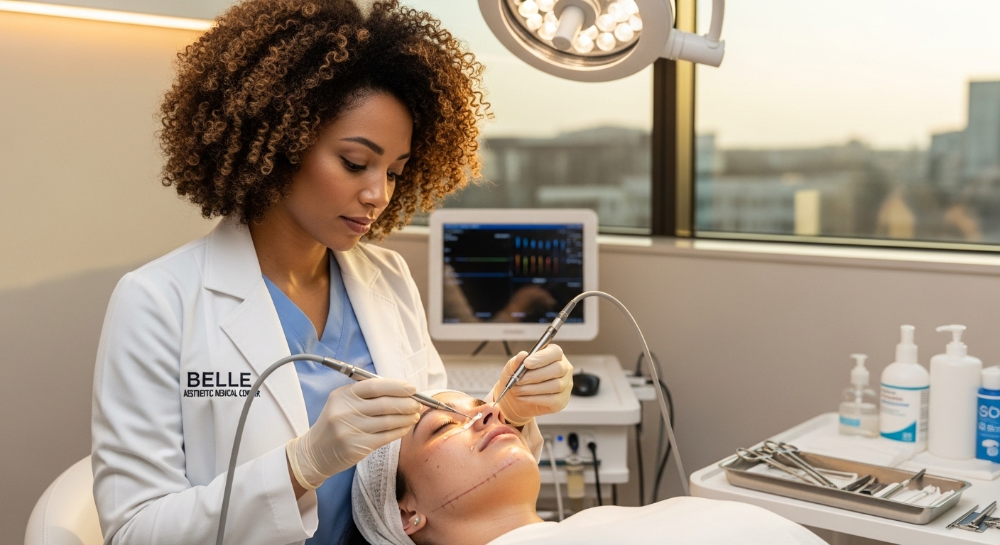

Tecnología Facial
Tensamax: El Despertar Natural de la Firmeza en tu Piel
No se trata de alterar quién eres, sino de estimular a tu propio cuerpo para que recupere su tono natural a través de la radiofrecuencia avanzada.

Bienestar IV
Sueroterapia IV: Nutrición Profunda que Transforma
Descubre cómo las vitaminas endovenosas garantizan una absorción del 100%, fortaleciendo tu sistema inmune y revitalizando tus células.

Cuidado de la Piel
Limpieza Facial: El Ritual Sagrado para una Piel que Respira
Mucho más que un lujo, es una necesidad higiénica. Aprende por qué la limpieza profesional es la base de cualquier tratamiento estético.

Renovación Cutánea
Youth Pen: Reescribiendo la Historia de tu Piel
La terapia de microagujas que despierta el poder autosanador de tu cuerpo para tratar cicatrices, líneas de expresión y poros dilatados.

Lifting sin Cirugía
Endolifting: La Evolución de la Firmeza sin Quirófano
Redefine tu contorno facial con tecnología láser de diodo mínimamente invasiva. Resultados estructurales sin cirugía tradicional.